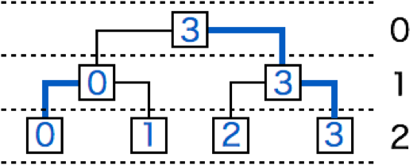

AOR イカちゃんとあなたは、トーナメント形式の卓球大会シングルスの部に偵察に来た。 全ての試合を録画したい AOR イカちゃんのために、あなたはこの大会で行われる試合数を求めてあげることにした。
この大会には $N$ 人の選手が参加しており、それぞれ $0, \cdots , N - 1$ の背番号を持っている。 そのうち、 $M$ 人の選手が棄権し、試合には出場しなかった。
この大会の試合数は、以下のルールに基いて決定される。
トーナメント表は高さ $L = log_2 N$ の完全二分木で表され、葉にあたる各頂点には参加者の背番号が書き込まれている。 根の深さを 0 とすると、 $i$ 回戦( $1 \le i \le L$ )は以下のように行われる。 深さ $L - i$ の各頂点の子に書かれた番号の選手同士が試合を行い、その勝者の背番号をその頂点に書き込む。
入力は以下の形式で与えられます。
$N \ M$
$a_1$
$\vdots$
$a_M$
この大会が終了するまでに行う試合数を 1 行で出力してください。また、末尾に改行も出力してください。
2 0
1
最初の試合で優勝者が決まります。
4 2 2 3
1